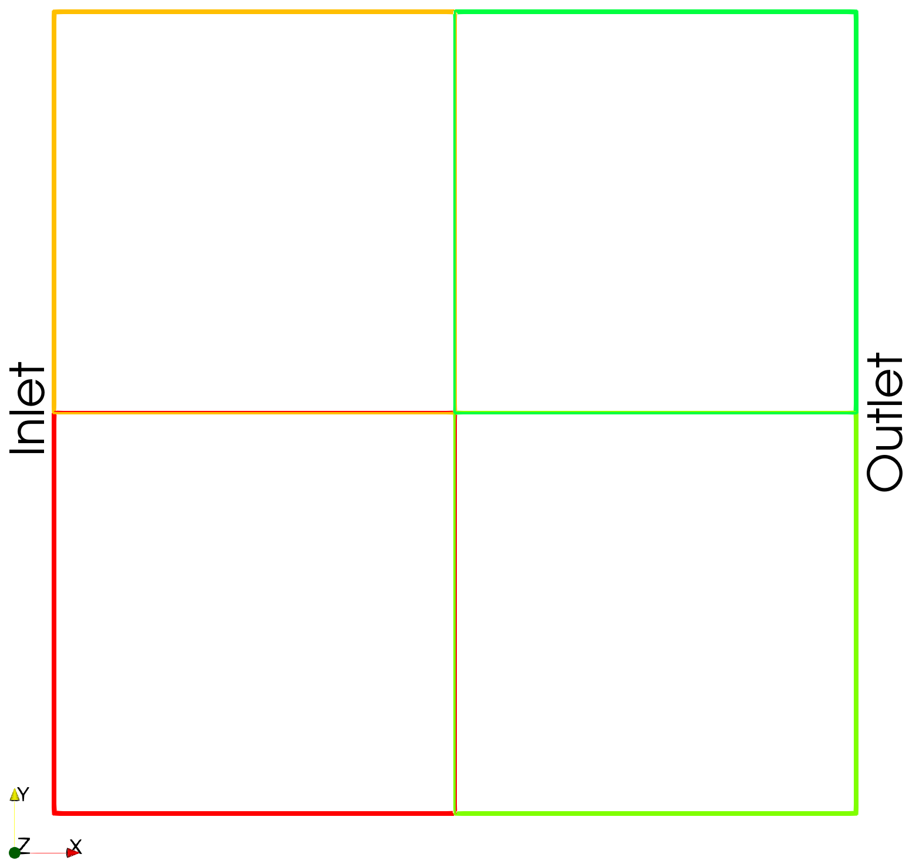
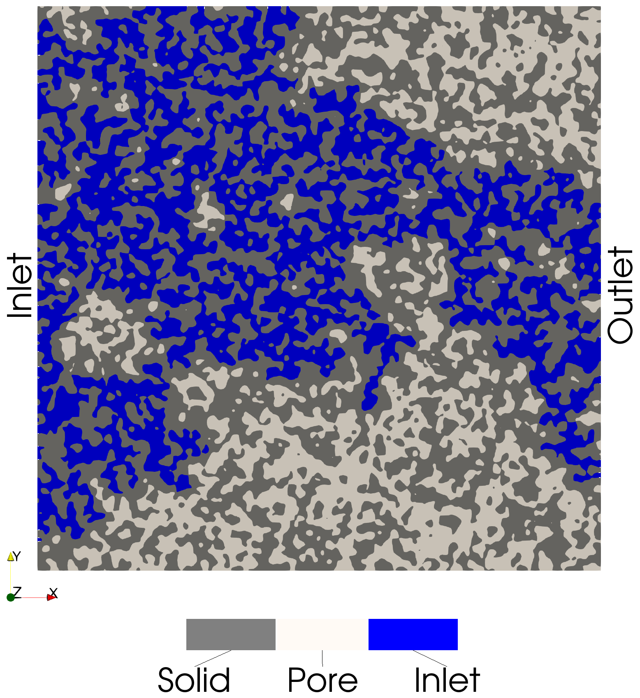
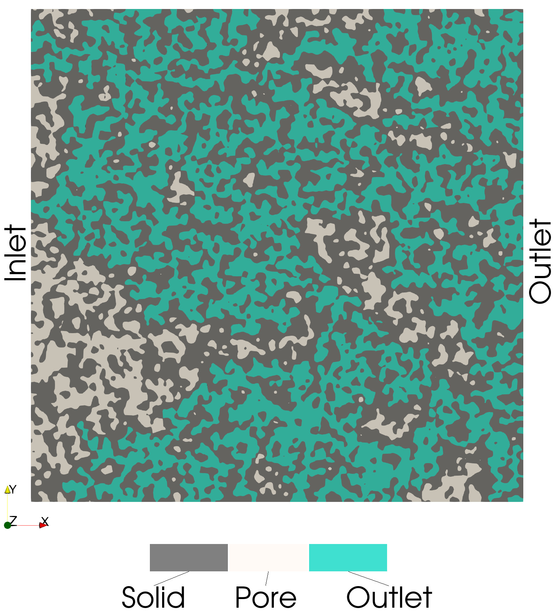
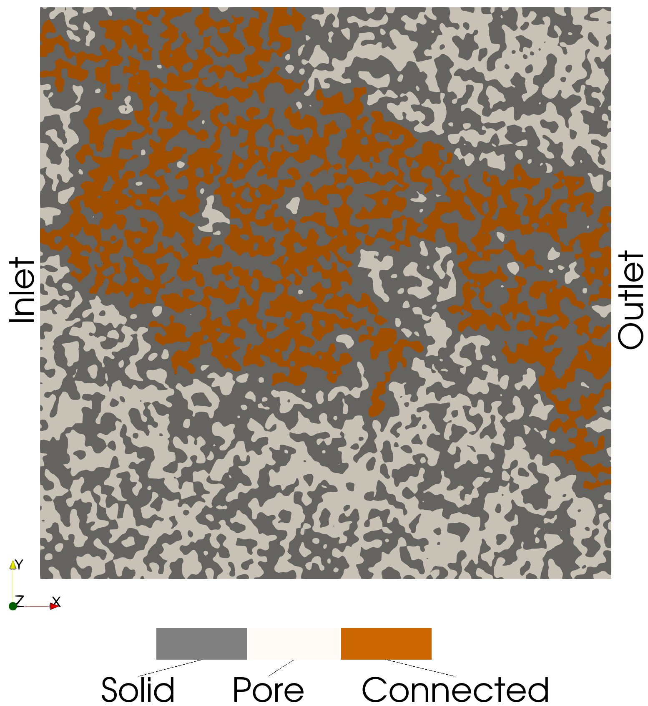
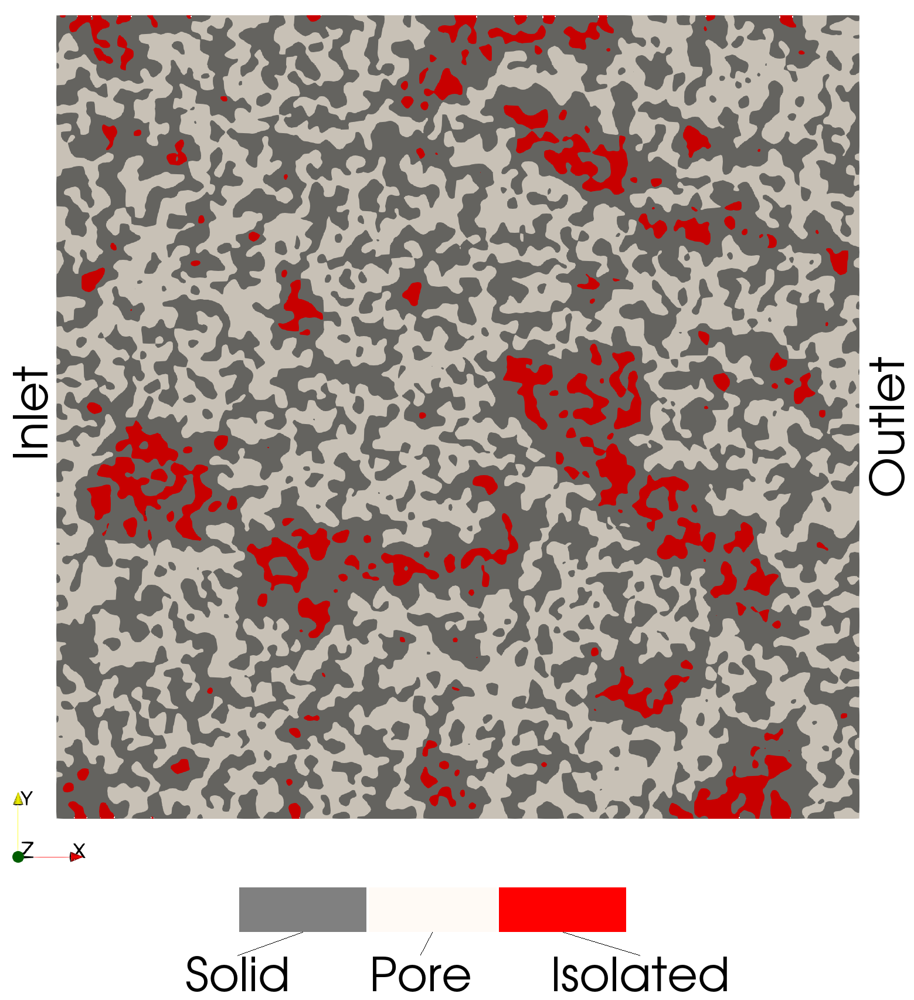

Connected Pathways in Random Porous Media
This example demonstrates how to identify connected pathways and isolated pores through a connected components analysis. The algorithm in PMMoTo is a extension of the Python package cc3d [5] for distributed memory systems and periodic porous structures.
To run this example:
mpirun -np 4 python examples/connected_pathways/connected_pathways.py
Step 1: Import Modules
from mpi4py import MPI
import numpy as np
import pmmoto
Step 2: Domain Setup
To initialize PMMoTo, the following parameters must be specified for this example:
voxels: the number of voxels in each dimension for the image representing the porous structureboundary_types: the boundary conditions applied during the simulationrank: the MPI rank of the current processbox: the physical size of the simulation domaininletandoutlet: the designated inflow and outflow facessubdomains: the number of subdomains in each dimension
For this example, we will analyze a porous structure that is thin in the z-dimension to allow for easier visualization.
import pmmoto
voxels = (2000, 2000, 10)
boundary = pmmoto.BoundaryType.END
boundary_types = (
(boundary, boundary),
(boundary, boundary),
(boundary, boundary),
)
box = ((0, 2000), (0, 2000), (0, 30))
inlet = ((True, False), (False, False), (False, False))
outlet = ((False, True), (False, False), (False, False))
subdomains = (2, 2, 1)
sd = pmmoto.initialize(
voxels, boundary_types=boundary_types, rank=rank, subdomains=subdomains, box=box, inlet=inlet, outlet=outlet
)
The domain decomposed into four subdomains is shown below.
{kind=link}
Step 3: Generate Random Porous Media
While memory-inefficient and generally discouraged, PMMoTo supports reading or generating an entire image and then transferring ownership to the subdomain (i.e., after domain decomposition). To demonstrate this behavior in this example, each process will generate a full image of the entire domain, which will then be decomposed. For this reason, subdomain.domain.voxels is passed to the domain generation function instead of subdomain.voxels, which only represents the number of voxels owned by the local process.
The porous structure is generated using the function gen_img_smoothed_random_binary. The total number of domain voxels is specified, and to ensure that an identical image is created on each process, the seed parameter is set. The p_zero parameter controls the porosity of the structure and represents the probability of a voxel being a pore. The smoothness parameter determines the degree of spatial smoothing applied to the image.
img = pmmoto.domain_generation.gen_img_smoothed_random_binary(
sd.domain.voxels, p_zero=0.5, smoothness=10, seed=8
)
{kind=link}
Step 4: Domain Decomposition
To deconstruct the image so that each process saves only the portion it is responsible for, the deconstruct_img function is called. This function takes the Subdomain object, the full image, the subdomain map, and the process rank as inputs.
sd, img_sd = pmmoto.domain_generation.deconstruct_img(sd, img, subdomains, rank)
The dimensions of img_sd are now smaller than those of img, as it contains only the portion of the domain assigned to the current process.
Step 5: Label Connected Components
The function connect_components in PMMoTo performs a connected components analysis which yields a labeled image where voxels of the same label are connected as well as the total number of labels. The default (and currently only) connectivity option in PMMoTo is 26-connected, meaning voxels are considered connected if they share a face, edge, or corner. Other common connectivity schemes include 18-connected (faces and edges) and 6-connected (faces only).8-connected (i.e., faces).
cc, label_count = pmmoto.filters.connected_components.connect_components(img_sd, sd)
{kind=link}
Step 6: Inlet/Outlet Connectivity
The labeled image returned by connect_components can be analyzed to determine which labels are connected to the inlet and/or outlet of the domain. A voxel is considered connected to the inlet or outlet if it lies on the corresponding face of the domain. If a labeled set of voxels spans both the inlet and outlet faces, it represents a connected pathway through the domain. In contrast, if a labeled set is not connected to either the inlet or outlet, the labeled set is isolated.
inlet_img = pmmoto.filters.connected_components.inlet_connected_img(sd, img_sd)
outlet_img = pmmoto.filters.connected_components.outlet_connected_img(sd, img_sd)
inlet_outlet_img = pmmoto.filters.connected_components.inlet_outlet_connected_img(sd, img_sd)
isolated_img =
Inlet-Connected Voxels
These voxels are connected to the inlet:
{kind=link}
Outlet-Connected Voxels
These voxels are connected to the outlet:
{kind=link}
Connected Pathway Voxels (Inlet and Outlet)
These voxels are connected to both the inlet and outlet (i.e., a connected path):
{kind=link}
Isolated Voxels
These voxels are connected to neither the inlet and outlet:
{kind=link}
Step 7: Save Outputs
pmmoto.io.output.save_img(
"examples/connected_pathways/image",
sd,
img_sd,
additional_img={
"cc": cc,
"inlet_img": inlet_img,
"outlet_img": outlet_img,
"inlet_outlet_img": inlet_outlet_img,
"isolated_img": isolated_img,
},
)
Output
The expected output from a successful run is:
image.pvtiand a folderimage_procwith eight.vtifiles, all of which can be opened in Paraview
The code used to generate the plots in this example is located at examples/connected_pathways/plot_connected_pathways.py and must be run with pvpython, ParaView’s Python interpreter.